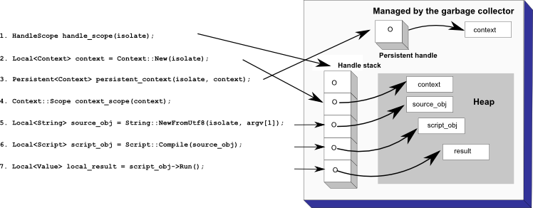
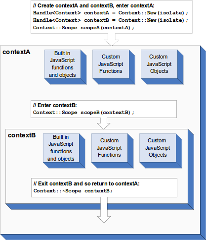

Native Abstractions for Node.js (nan)
A header file filled with macro and utility goodness for making add-on development for Node.js easier
Nan 是一个具有更丰富的功能封装以方便开发 Node.js C++ 插件的头文件. 跟随 Nan 的 README 文件, 从 v8 引擎开始, 同时结合 libuv , 再到 Node.js 中了解 C++ 插件, 最后观察nan究竟做了哪些封装.
The V8 Getting Started * Guide
v8本来是为Chrome设计的JavaScript解析引擎, 看的时候多从浏览器的角度去考虑.
Hello World
接下来会给出一个Hello Example, 演示如何使用v8打印出Hello World. 在给出代码之前, 首先简述几个概念:
Isolate: 表示一个v8虚拟机实例.Local Handle: 指向v8对象的引用对象, 由于v8引擎的垃圾回收机制的工作方式, 所有的v8对象都需要通过handle访问.Handle Scope: 一个或多个Handle的集合. 当我们使用完多个Handle后, 无需通过逐个析构的方式去删除它们, 而是通过析构Handle Scope就可以了.Context: 为JavaScript在同一个v8虚拟机实例中提供隔离的执行环境.
更详细的解释将会在Embedder's Guide中进行讨论.
将hello-world.cc拆开来看
① 启动v8部分.
#include <stdio.h>
#include <stdlib.h>
#include <string.h>
#include "include/libplatform/libplatform.h"
#include "include/v8.h"
int main(int argc, char* argv[]) {
--// Initialize V8.
--
--// 初始化International Components for Unicode
--// 用于处理Unicode编码
--// 从本地的icudtl.dat读取编解码数据
--v8::V8::InitializeICUDefaultLocation(argv[0]);
--// natives_blob.bin 和 snapshot_blob.bin
--// 用于加速启动V8引擎
--v8::V8::InitializeExternalStartupData(argv[0]);
--// 初始化v8平台
--std::unique_ptr<v8::Platform> platform = v8::platform::NewDefaultPlatform();
--// 初始化v8管理平台
--v8::V8::InitializePlatform(platform.get());
--v8::V8::Initialize();
v8::V8::InitializeICUDefaultLocation:v8的Unicode字符处理依赖于icu库, 同时使用该函数从外部的icudtl.dat文件加载Unicode的编解码数据.v8::V8::InitializeExternalStartupData:v8在启动的时候需要预先加载一些JavaScript build-in函数, 例如math、full-featured regular expression engine, 这个启动过程相当缓慢. 而自从4.3版本开始,v8引入了snapshotting快照加载功能用于加速这个过程, 目前依赖两种快照natives_blob.bin和snapshot_blob.bin.natives_blob.bin: 存储了JavaScript build-in函数解析执行后的内存布局快照(JavaScript build-in可以在v8/src/objects.h中的FUNCTIONS_WITH_ID_LIST宏中查看.snapshot_blob.bin: 存储了v8启动后的内存布局快照.
v8::platform: 管理v8引擎实例isolate的接口, 保存多个isolate的执行状态和所在线程.
② 创建v8引擎实例
--// Create a new Isolate and make it the current one.
--v8::Isolate::CreateParams create_params;
--create_params.array_buffer_allocator =
-- v8::ArrayBuffer::Allocator::NewDefaultAllocator();
--v8::Isolate* isolate = v8::Isolate::New(create_params);
create_params: 存储v8引擎的初始化参数v8::Isolate::New: 实例化v8引擎
③ 创建JavaScript代码的执行环境
// 创建临时作用域用于自动析构 HandleScope
--{
----v8::Isolate::Scope isolate_scope(isolate);
----// Create a stack-allocated handle scope.
----// HandleScope, 之前的概念简要中提到的利用RAII创建和析构Handle
----// HandleScope作用于isolate(v8实例)
----// 表示从此开始在isolate中创建的handle在作用域结束时回收
----v8::HandleScope handle_scope(isolate);
----// Create a new context.
----// 创建隔离的`JavaScript`代码执行环境
----v8::Local<v8::Context> context = v8::Context::New(isolate);
----// Enter the context for compiling and running the hello world script.
----// Context::Scope 作用于 context
----// 表示从此开始在context中创建的实例在离开作用域时回收
----v8::Context::Scope context_scope(context);
----// Create a string containing the JavaScript source code.
----// 将`JavaScript`代码实例化表示为 v8::String
----// 此处的JavaScript代码为 'Hello' + ', World'
----v8::Local<v8::String> source =
---- v8::String::NewFromUtf8(isolate, "'Hello' + ', World!'",
---- v8::NewStringType::kNormal)
---- .ToLocalChecked();
----// Compile the source code.
----// 解析JavaScript代码
----v8::Local<v8::Script> script =
---- v8::Script::Compile(context, source).ToLocalChecked();
----// Run the script to get the result.
----// 执行编译后的`JavaScript`代码, 并且在context中执行
----v8::Local<v8::Value> result = script->Run(context).ToLocalChecked();
----// Convert the result to an UTF8 string and print it.
----// 从v8::Value中提取执行结果, 转换为utf-8字符串
----v8::String::Utf8Value utf8(isolate, result);
----printf("%s\n", *utf8);
--}
//↑ 临时作用域结束, 自动析构临时作用域内创建的HandleScope
v8::Isolate::Scope: 作用于isolate实例, 利用RAII自动管理此作用域内所有的操作, 在离开作用域时回收.v8::Local<T>: 相当于只能指针, 表示被引用对象, 由HandleScope管理, 离开作用域时析构该引用.v8::Script: 编译后的JavaScript代码的AST抽象表示根节点, 必须在实例化是绑定到v8::Context.
④ 析构v8实例
--// Dispose the isolate and tear down V8.
--isolate->Dispose();
--v8::V8::Dispose();
--v8::V8::ShutdownPlatform();
--delete create_params.array_buffer_allocator;
--return 0;
}
Hello World启示
v8依赖引用计数进行垃圾回收, 并且在v8提供的API接口中利用Handle进行引用计数.Handle仅仅是对v8引擎实例中v8数据结构的引用, 在解构后仅仅是将其引用计数－1, 何时进行内存回收由垃圾回收实例决定.v8中可以有多个v8引擎实例, 但每个实例中的v8数据结构都是与v8引擎强关联的, 无法跨引擎传递使用.
Embedder's Guide
解释v8提供的C++ API中的核心概念:
HandleContextsTemplatesAccessorsInterceptorsSecurity ModelExceptionsInheritance
Handles and Garbage Collection
Handle是v8引擎堆中JavaScript对象的引用. v8垃圾回收器会将无法访问的JavaScript对象进行回收. 而在垃圾回收过程中, JavaScript对象在内存中的位置会经常移动, 当一个对象移动完成后, 所有在此对象上的Handle引用也会更新, 重新指向对象的新地址.
Handle有几种类型:
Local Handle:Local中对JavaScript对象的引用是基于Handle Stack的. 必须配合HandleScope一起使用.HandleScope在构造时, 会营造出Handle Stack, 在此之后构造的所有Local Handle都由这个HandleScope管理, 并在HandleScope析构后Clear, 释放Local Handle对JavaScript对象的引用.Local中对JavaScript对象的引用是基于Handle Stack的, 由HandleScope管理.Handle Stack要与C++ Stack区分开,HandleScope是基于C++ Stack的, 在离开作用域时析构, 而Local是基于Handle Stack的, 在Handle Stack删除时解开对JavaScript对象的引用并析构.Local必须执行在HandleScope中, 否则会造成内存泄漏, 还有可能引起v8崩溃.- 由于
HandleScope是基于C++ Stack的, 如果Local被复制(或别引用)离开了当前作用域(也同时离开了当前HandleScope), 需要使用EscapableHandleScope或者利用其中的对象指针生成Persistent -
Handleis an alias forLocalfor historical reasons.
Persistent Handle:Persistent同样是对于v8引擎中JavaScript对象的引用, 与Local不同的是Persistent并不由HandleScope管理, 而是需要调用Persistent Handle::Reset()进行其对JavaScript对象的解引用.

Contexts
Context是在v8引擎实例Isolate内部的一个独立地JavaScript执行环境. 在执行JavaScript代码时, 必须指定其Context.
Context的存在是由于JavaScript的内置函数与对象(build-in functions and objects), 全局运行环境(global)都是可以被用户代码改变的. 如果两份不相关的代码在没有Context的情况下运行, 那么其中一份代码改变了全局相关属性后, 另一份JavaScript代码也会受到影响.
Contexts Extensive Caching
Context中有独立的build-in functions and objects、global, 而build-in里有不少是由JavaScript低等级代码(低级胶水JavaScript, JavaScript中通过%调用C++函数), 这意味着每次新建Context的时候都需要解析并生成一份build-in.
不过v8提供了对build-in的缓存, 在第一份Context初始化完成后, 后续生成的Context只需沿用已经初始化完成的build-in就可以了.
而且v8提供快照功能, 在v8进程初始化的时候可以通过编译时提前准备好的snapshot_blob.bin快照, 初始化第一个Context堆内存空间并将build-in缓存起来.

即使是使用了缓存技术, 每个Context仍然是独立的, 只是他们的对全局对象和build-in的修改记录在自己的内存空间里, 而不会影响缓存数据.
Templates
v8语义下的template指的是JavaScript函数和对象在C++与之对应的抽象. 通过template可以在JavaScript中访问被template封装后的C++函数和对象.
在JavaScript语义下, Function和Object具有很多相似的地方, 但是在C++语义下, 这两种是完全不一样的东西. 为了将C++语义下的Function与Object映射到v8引擎中, v8提供了两种Template
Function Template: 提供了C++中对JavaScript函数的抽象, 可以在C++中创建JavaScript函数. 也可以包裹单个C++函数, 并抽象成JavaScript函数.Object Template: 提供了C++中对JavaScript中对象实例的抽象.
重申一下, Function Template是用于在C++中(描述)创建JavaScript中的函数的, 而Object Template是用于在C++中(描述)创建并返回JavaScript对象实例的.
在C++中可以通过Function Template来模拟JavaScript中的类, 而Object Template用于创建JavaScript对象实例.
// Create a template for the global object and set the
// built-in global functions.
Local<ObjectTemplate> global = ObjectTemplate::New(isolate);
global->Set(String::NewFromUtf8(isolate, "log"), FunctionTemplate::New(isolate, LogCallback));
// Each processor gets its own context so different processors
// do not affect each other.
Persistent<Context> context = Context::New(isolate, NULL, global);
Accessors
v8中提供的Accessors与JavaScript中的访问器概念一样, 提供控制对象中属性的访问行为.
通过对象中的SetAccessor方法可以对对象添加访问器属性, 并且通过AccessorGetterCallback、AccessorSetterCallback添加对象的[Getter|Setter], 以及AccessControl控制访问器权限.
enum AccessControl {
DEFAULT = 0,
ALL_CAN_READ = 1,
ALL_CAN_WRITE = 1 << 1,
PROHIBITS_OVERWRITING = 1 << 2
};
typedef void (*AccessorGetterCallback)(Local<String> property,
const PropertyCallbackInfo<Value>& info);
typedef void (*AccessorSetterCallback)(Local<String> property,
Local<Value> value,
const PropertyCallbackInfo<void>& info);
Interceptors
访问对象前插一脚
Interceptors提供了访问对象前调用自定义函数的机会. Interceptors分为两种
named property interceptors: 在通过字符串名字(string name)访问对象前调用的, 例如document.theFormName.elementName.indexed property interceptors: 通过索引访问对象前调用. 例如document.forms.elements[0].
在目前的[Embedder's Guide](https://github.com/v8/v8/wiki/Embedder%27s-Guide)中, 使用的分别是
void ObjectTemplate::SetNamedPropertyHandler(
IndexedPropertyGetterCallback getter,
IndexedPropertySetterCallback setter = 0,
IndexedPropertyQueryCallback query = 0,
IndexedPropertyDeleterCallback deleter = 0,
IndexedPropertyEnumeratorCallback enumerator = 0,
Local<Value> data = Local<Value>());
void ObjectTemplate::SetIndexedPropertyHandler(
NamedPropertyGetterCallback getter,
NamedPropertySetterCallback setter = 0,
NamedPropertyQueryCallback query = 0,
NamedPropertyDeleterCallback deleter = 0,
NamedPropertyEnumeratorCallback enumerator = 0,
Local<Value> data = Local<Value>());
但是以上两个函数都已经在最新的v8源码中被标记为deprecate, 取而代之的是
void SetHandler(const NamedPropertyHandlerConfiguration& configuration);
void SetHandler(const IndexedPropertyHandlerConfiguration& configuration);
Different between Interceptors And Accessor
Interceptors会影响对象所有属性的访问行为, 而Accessor只会针对单个属性.
Exceptions
v8在运行时发生错误会抛出异常, 而在C++中可以利用TryCatch类作用域Isolate, 捕获v8运行过程中抛出的异常.
TryCatch trycatch(isolate);
Local<Value> v = script->Run();
// 当发生异常时, `v8`会返回一个空的`Value`实例
if (v.IsEmpty()) {
Local<Value> exception = trycatch.Exception();
String::Utf8Value exception_str(exception);
printf("Exception: %s\n", *exception_str);
// ...
}
Inheritance
在
C++中利用Function Template模拟JavaScript中的类.
JavaScript本来是没有类的, 但是可以利用function去模拟类的行为.
// Create an object "bicycle"
function bicycle(){
}
// Create an instance of bicycle called roadbike
var roadbike = new bicycle()
// Define a custom property, wheels, on roadbike
roadbike.wheels = 2
以及利用prototype去模拟类的实例方法和属性
// First, create the "bicycle" object
function bicycle(){
}
// Assign the wheels property to the object's prototype
bicycle.prototype.wheels = 2
而v8 C++ API也提供了设置Function prototype的方法.
// function biketemplate() { }
Local<FunctionTemplate> biketemplate = FunctionTemplate::New(isolate);
// biketemplate.prototype.wheels = MyWheelsMethodCallback;
biketemplate->PrototypeTemplate().Set(
String::NewFromUtf8(isolate, "wheels"),
FunctionTemplate::New(isolate, MyWheelsMethodCallback)->GetFunction();
)
同时也提供了inherit方法
void Inherit(Local<FunctionTemplate> parent);
v8中的Maybe type
Maybe type参考了具有强类型系统的严格函数式语言Haskell.
From Haskell
It allows the programmer to specify something may not be there.
data Maybe a = Just a | Nothing
To v8
v8中提供Maybe<T>和MaybeLocal<T>用于在获取对象中实际的值时, 先检查所获得的值是否为空. 如果为空则抛出异常, 不为空则返回<T>或Local<T>.
例如MaybeLocal中
template <class T>
Local<T> MaybeLocal<T>::ToLocalChecked() {
if (V8_UNLIKELY(val_ == nullptr)) V8::ToLocalEmpty();
return Local<T>(val_);
}
void V8::ToLocalEmpty() {
Utils::ApiCheck(false, "v8::ToLocalChecked", "Empty MaybeLocal.");
}